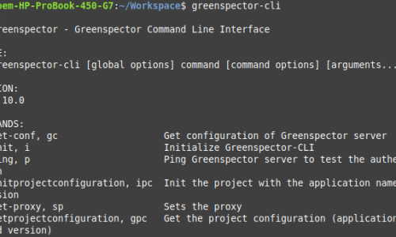
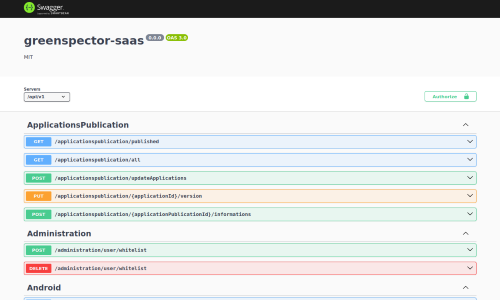
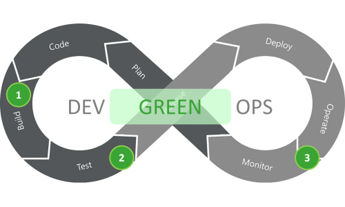

Greenspector Studio
DevGreenOps and continuous integration
In DevGreenOps mode, Greenspector Studio helps you measure from the earliest project stages, throughout development, in staging and in production monitoring to keep your application's resource use under control.
Continuous measurement
Move from DevOps to DevGreenOps with continuous impact measurement
Integrate Greenspector Studio into your DevOps pipeline to validate efficiency, impacts and performance before each release.
Easy integration thanks to our SaaS solution and extensive APIs.
Easily monitor ecoscore, CO2 impact, journey time, behaviour on older devices, and more.
Software factories
Integration into all software factories
Add Greenspector Studio very easily to your software factory via the many available APIs.
Nothing is easier than running a measurement before each release or after each build. The more often you measure, the more instructive the results become and help you keep your product's efficiency and impacts under control. Move to DevGreenOps!

REST API
Use the APIs in your pipeline
Use our REST APIs to trigger tests from your CI/CD (GitLab CI, Azure CI, Jenkins…).
Use other APIs to export results to your own dashboards.
Learn more: see the API documentation.

GreenOps
Track key GreenOps indicators
Measuring before each release allows you to:
- Avoid going live with a efficiency or performance defect (it happens…)
- Observe long-term trends: across versions, are impacts moving in the right direction?
You improve product quality and ensure it aligns with company strategy and user expectations.

Lifecycle
DevGreenOps
DevGreenOps is a natural evolution of the DevOps methodology. All 8 phases of the loop can be impacted by DevGreenOps.
Throughout the cycle, the goal is to adopt a efficiency approach (of needs, resource consumption…) and control the environmental quality of the software product.
Greenspector Studio is mainly used for pre-release testing (2). It is also very useful to monitor production (3). And of course, run occasional measurements to verify the efficiency of a technical or functional choice (1).
To learn more we recommend our article « How to move from DevOps to DevGreenOps » or this webinar (in French).
